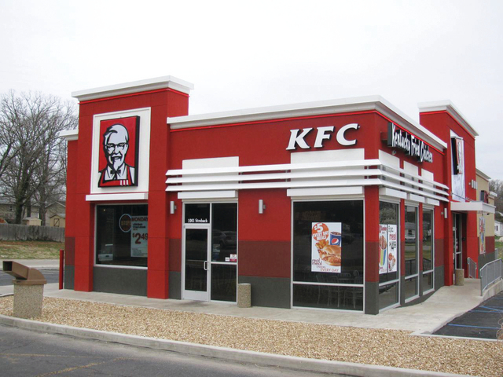

دجاج كنتاكي أو كي إف سي كما تُعرف حالياً (بالإنجليزية: KFC؛ اختصارا لـ Kentucky Fried Chicken) (والمعنى الحرفية «دجاج كنتاكي المقلي») - هي سلسلة مطاعم للوجبات السريعة تختص أساساً بالدجاج المقلي. يقع مقرها في مدينة لويفيل بولاية كنتاكي. تعد ثان أكبر سلسلة مطاعم وجبات سريعة في العالم من ناحية المبيعات بعد ماكدونالدز، حيث تملك دجاج كنتاكي ما يقرب من عشرين ألف فرع تتوزع على 123 بلداً وإقليماً حول العالم اعتباراً من شهر ديسمبر 2015. كان المطعم شركة فرعية تملكها يم! بالكامل بين عامي 1997–2002 م، ومنذ عام 2002 أصبحت شركة فرعية تملكها عملاق الطعام يم! بالكامل، وتملك يم! بالإضافة لدجاج كنتاكي كلاً من سلاسل بيتزا هت وتاكو بل ووينغ ستريت. في مقاطعة كيبيك الكندية، تسمي سلسلة المطاعم نفسها Poulet Frit du Kentucky أو اختصارًا PFK. تبيع كنتاكي بشكل رئيسي الدجاج المقلي، أو الشطائر، أو السلطات، أو البرغر. وبينما ينصب اهتمامُ الشركةِ الرئيسيُّ على الدجاج المقلي، فإنها تقدم أيضًا الدجاج المحمر والتحلية. تقدم كنتاكي خارج أمريكا الشمالية منتجات تتعتمد على لحم البقر، كالبرغر والكباب، وتقدم أيضًا منتجات تعتمد على لحم الخنزير في مناطق كالولايات المتحدة والصين، كالأضلاع وبعض الأكلات المحلية. أنشأ الكولونيل هارلاند ساندرز الشركةَ باسم Kentucky Fried Chicken عام 1952، إلا أن الفكرة تعود إلى عام 1930.
 read more الصفحة الرييسية